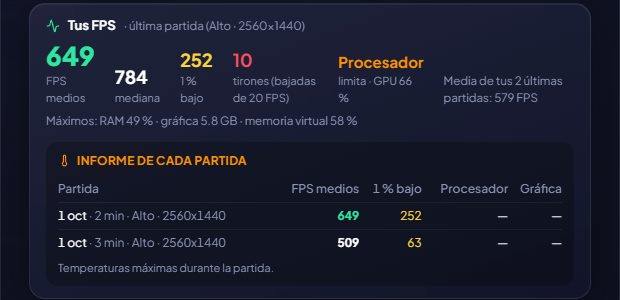

Els teus FPS reals
Mesura els FPS mentre jugues, sense tocar el joc, i t'explica què et limita.
Amb PresentMon, una eina gratuïta i de codi obert d'Intel, GameHub vigila des de fora quan el joc dibuixa cada fotograma: no injecta res, així que no molesta els anticheats. Quan tanques el joc, en desa un resum: FPS mitjans, mediana, 1% baix (com de fluid va) i microtalls.
Anota la teva configuració gràfica d'aquella sessió (qualitat, resolució, DLSS/FSR, generació de fotogrames, traçat de raigs, VSync, límit de FPS) i t'explica què limita el teu rendiment: la GPU, la CPU o un límit de FPS (si anaves limitat per VSync o per un límit del joc o del controlador, veuràs «Limitat» en lloc de culpar la CPU). A més, la RAM, la memòria gràfica i la memòria virtual que ha fet servir el joc, per si vas just.
He comprovat que mesura correctament: amb una animació a exactament 360 FPS, GameHub va llegir 358,8. I si els vols veure mentre jugues, posa'ls al HUD.
A l'informe de cada sessió (ArlequinPro), a més de la temperatura de la CPU i la GPU, també la de la RAM, només si el seu sensor realment la mesura.
Com es fa servir
- Activa-ho a la pantalla de benvinguda o a Opcions → El teu PC (és opcional). Windows et demana permís una vegada i comença a mesurar després de tancar la sessió o reiniciar.
- Juga una estona i tanca el joc: ho veuràs a la seva fitxa, a «Els teus FPS».

Vols provar-lo?
⬇ Baixada directa 🛍️ Baixa'l de Microsoft StoreWindows 10 i 11 (64 bits) · Gratuït · S'actualitza sol